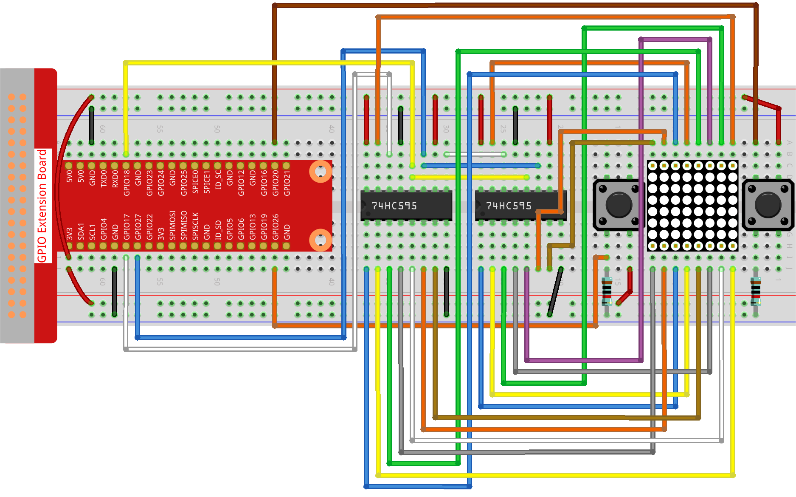

Note
Bonjour et bienvenue dans la communauté Facebook des passionnés de SunFounder Raspberry Pi, Arduino et ESP32 ! Plongez plus profondément dans l’univers du Raspberry Pi, de l’Arduino et de l’ESP32 avec d’autres passionnés.
Pourquoi nous rejoindre ?
Support d’experts : Résolvez les problèmes post-achat et les défis techniques grâce à l’aide de notre communauté et de notre équipe.
Apprenez & Partagez : Échangez des astuces et des tutoriels pour améliorer vos compétences.
Aperçus exclusifs : Accédez en avant-première aux nouvelles annonces de produits et aux avant-goûts.
Réductions spéciales : Profitez de remises exclusives sur nos derniers produits.
Promotions festives et cadeaux : Participez à nos tirages au sort et à nos promotions de saison.
👉 Prêt à explorer et à créer avec nous ? Cliquez sur [Ici] et rejoignez-nous dès aujourd’hui !
3.1.14 JEU – Not Not
Introduction
Dans cette leçon, nous allons créer un dispositif de jeu amusant, que nous appelons « Not Not ».
Pendant le jeu, la matrice de points affichera aléatoirement une flèche. Votre objectif est d’appuyer sur le bouton opposé à la direction de la flèche dans un temps limité. Si le temps est écoulé, ou si vous appuyez sur le bouton correspondant à la même direction que la flèche, vous perdez.
Ce jeu est idéal pour entraîner votre pensée inversée. Alors, on essaie ?
Composants nécessaires
Pour ce projet, nous aurons besoin des composants suivants :

Schéma de câblage
T-Board Name |
physical |
wiringPi |
BCM |
GPIO17 |
Pin 11 |
0 |
17 |
GPIO18 |
Pin 12 |
1 |
18 |
GPIO27 |
Pin 13 |
2 |
27 |
GPIO20 |
Pin 38 |
28 |
20 |
GPIO26 |
Pin 37 |
25 |
26 |

Procédures expérimentales
Étape 1 : Construisez le circuit.
Étape 2 : Ouvrez le fichier du code.
cd ~/davinci-kit-for-raspberry-pi/python-pi5
Étape 3 : Exécutez le programme.
sudo python3 3.1.14_MotionControl.py
Après le démarrage du programme, une flèche pointant vers la gauche ou la droite apparaît sur la matrice de points. Vous devez appuyer sur le bouton dans la direction opposée à la flèche dans un temps limité. Ensuite, le symbole "√" s’affichera sur la matrice de points. Si le temps est écoulé ou si vous appuyez sur le bouton correspondant à la même direction que la flèche, vous êtes éliminé et la matrice affichera "x". Vous pouvez également ajouter deux nouveaux boutons ou les remplacer par des touches de joystick pour les directions haut, bas, gauche et droite afin d’augmenter la difficulté du jeu.
Avertissement
Si vous recevez le message d’erreur RuntimeError: Cannot determine SOC peripheral base address, veuillez vous référer à Si gpiozero ne fonctionne pas.
Code
Note
Vous pouvez Modifier/Réinitialiser/Copier/Exécuter/Arrêter le code ci-dessous. Mais avant cela, vous devez vous rendre dans le chemin source, tel que davinci-kit-for-raspberry-pi/python-pi5. Après avoir modifié le code, vous pouvez l’exécuter directement pour voir le résultat.
#!/usr/bin/env python3
from gpiozero import OutputDevice, Button
import time
import threading
import random
# Broches GPIO pour le registre à décalage 74HC595
SDI = OutputDevice(17) # Entrée de données série
RCLK = OutputDevice(18) # Horloge du registre
SRCLK = OutputDevice(27) # Horloge du registre à décalage
# Broches GPIO pour les boutons
AButtonPin = Button(20) # Bouton A
BButtonPin = Button(26) # Bouton B
# Initialisation des variables de jeu
timerPlay = 0
timerCheck = 0
waypoint = "NULL"
stage = "NULL"
# Glyphes des flèches pour l'affichage sur la matrice LED
arrow = {
"right": [0xFF, 0xEF, 0xDF, 0x81, 0xDF, 0xEF, 0xFF, 0xFF],
"left": [0xFF, 0xF7, 0xFB, 0x81, 0xFB, 0xF7, 0xFF, 0xFF]
}
# Glyphes de retour pour les réponses correctes/incorrectes
check = {
"wrong": [0xFF, 0xBB, 0xD7, 0xEF, 0xD7, 0xBB, 0xFF, 0xFF],
"right": [0xFF, 0xFF, 0xF7, 0xEB, 0xDF, 0xBF, 0xFF, 0xFF]
}
def hc595_shift(dat):
""" Shift data to the 74HC595 shift register. """
for i in range(8):
SDI.value = 0x80 & (dat << i)
SRCLK.on()
SRCLK.off()
def display(glyphCode):
""" Display a glyph on the LED matrix. """
for i in range(0, 8):
hc595_shift(glyphCode[i])
hc595_shift(0x80 >> i)
RCLK.on()
RCLK.off()
def creatGlyph():
""" Create a new glyph for the game and start the play timer. """
global waypoint, stage, timerPlay
waypoint = random.choice(list(arrow.keys()))
stage = "PLAY"
timerPlay = threading.Timer(2.0, timeOut)
timerPlay.start()
def checkPoint(inputKey):
""" Check player's input and update game state. """
global waypoint, stage, timerCheck
if inputKey == "empty" or inputKey == waypoint:
waypoint = "wrong"
else:
waypoint = "right"
timerPlay.cancel()
stage = "CHECK"
timerCheck = threading.Timer(1.0, creatGlyph)
timerCheck.start()
def timeOut():
""" Handle game timeout scenario. """
checkPoint("empty")
def getKey():
""" Detect button press and trigger checkpoint. """
if AButtonPin.is_pressed and not BButtonPin.is_pressed:
checkPoint("right")
elif not AButtonPin.is_pressed and BButtonPin.is_pressed:
checkPoint("left")
def main():
""" Main game loop. """
creatGlyph()
while True:
if stage == "PLAY":
display(arrow[waypoint])
getKey()
elif stage == "CHECK":
display(check[waypoint])
def destroy():
""" Clean up resources on program exit. """
global timerPlay, timerCheck
timerPlay.cancel() # Annule le minuteur de jeu
timerCheck.cancel() # Annule le minuteur de vérification
# Exécute le jeu et gère l'interruption clavier pour une sortie propre
try:
main()
except KeyboardInterrupt:
destroy()
Explication du Code
Basé sur la leçon 1.1.6 Matrice LED, cette activité ajoute 2 boutons pour créer un dispositif de jeu amusant. Si vous n’êtes pas encore très familier avec la matrice LED, veuillez vous référer à 1.1.6 Matrice de LED.
Le code commence par importer les bibliothèques nécessaires.
gpiozeroest utilisé pour interagir avec les broches GPIO, comme les boutons et les dispositifs de sortie.timepermet d’ajouter des délais,threadingpermet d’exécuter plusieurs tâches simultanément, etrandomest utile pour introduire de l’aléatoire dans le projet.#!/usr/bin/env python3 from gpiozero import OutputDevice, Button import time import threading import random
Initialisation des broches GPIO pour le registre à décalage (
SDI,RCLK,SRCLK) et pour les boutons (AButtonPin,BButtonPin). Le registre à décalage permet de contrôler plusieurs LED avec moins de broches GPIO, ce qui est essentiel pour l’affichage sur la matrice LED.# Broches GPIO pour le registre à décalage 74HC595 SDI = OutputDevice(17) # Entrée de données série RCLK = OutputDevice(18) # Horloge du registre SRCLK = OutputDevice(27) # Horloge du registre à décalage # Broches GPIO pour les boutons AButtonPin = Button(20) # Bouton A BButtonPin = Button(26) # Bouton B
Initialisation des variables utilisées dans la logique du jeu, telles que les minuteurs et les indicateurs d’état du jeu.
# Initialisation des variables de jeu timerPlay = 0 timerCheck = 0 waypoint = "NULL" stage = "NULL"
Définit les motifs binaires pour afficher les flèches et les retours (correct/incorrect) sur la matrice LED. Chaque élément du tableau représente une ligne de la matrice LED, où
1et0correspondent respectivement à une LED allumée ou éteinte.# Glyphes de flèches pour l'affichage sur la matrice LED arrow = { "right": [0xFF, 0xEF, 0xDF, 0x81, 0xDF, 0xEF, 0xFF, 0xFF], "left": [0xFF, 0xF7, 0xFB, 0x81, 0xFB, 0xF7, 0xFF, 0xFF] } # Glyphes de retour pour les réponses correctes/incorrectes check = { "wrong": [0xFF, 0xBB, 0xD7, 0xEF, 0xD7, 0xBB, 0xFF, 0xFF], "right": [0xFF, 0xFF, 0xF7, 0xEB, 0xDF, 0xBF, 0xFF, 0xFF] }
Cette fonction transfère un octet de données vers le registre à décalage 74HC595. Elle parcourt chaque bit de l’octet
dat, règle la brocheSDIsur haut ou bas en conséquence, et bascule la brocheSRCLKpour déplacer le bit dans le registre.def hc595_shift(dat): """ Shift data to the 74HC595 shift register. """ for i in range(8): SDI.value = 0x80 & (dat << i) SRCLK.on() SRCLK.off()
Cette fonction affiche un glyphe sur la matrice LED. Elle envoie chaque ligne du glyphe (représentée par
glyphCode) et l’adresse de la ligne au registre à décalage en utilisanthc595_shift, puis bascule la brocheRCLKpour mettre à jour l’affichage.def display(glyphCode): """ Display a glyph on the LED matrix. """ for i in range(0, 8): hc595_shift(glyphCode[i]) hc595_shift(0x80 >> i) RCLK.on() RCLK.off()
Cette fonction sélectionne aléatoirement un glyphe du dictionnaire
arrow, démarre le minuteur de jeu et définit l’état du jeu à « PLAY ».threading.Timerest utilisé pour le contrôle du temps dans le jeu.def creatGlyph(): """ Create a new glyph for the game and start the play timer. """ global waypoint, stage, timerPlay waypoint = random.choice(list(arrow.keys())) stage = "PLAY" timerPlay = threading.Timer(2.0, timeOut) timerPlay.start()
Cette fonction vérifie l’entrée du joueur par rapport au glyphe actuel. Si l’entrée est correcte, elle règle le waypoint sur « right », sinon sur « wrong ». Elle annule ensuite le minuteur de jeu actuel et démarre un nouveau minuteur pour le prochain glyphe.
def checkPoint(inputKey): """ Check player's input and update game state. """ global waypoint, stage, timerCheck if inputKey == "empty" or inputKey == waypoint: waypoint = "wrong" else: waypoint = "right" timerPlay.cancel() stage = "CHECK" timerCheck = threading.Timer(1.0, creatGlyph) timerCheck.start()
Cette fonction est appelée lorsque le temps imparti est écoulé. Elle invoque
checkPointavec « empty » pour indiquer qu’aucun bouton n’a été pressé à temps.def timeOut(): """ Handle game timeout scenario. """ checkPoint("empty")
Cette fonction vérifie l’état des boutons. Si
AButtonPinest pressé (etBButtonPinne l’est pas), elle appellecheckPointavec « right ». SiBButtonPinest pressé (etAButtonPinne l’est pas), elle appellecheckPointavec « left ».def getKey(): """ Detect button press and trigger checkpoint. """ if AButtonPin.is_pressed and not BButtonPin.is_pressed: checkPoint("right") elif not AButtonPin.is_pressed and BButtonPin.is_pressed: checkPoint("left")
La fonction
maincontrôle le déroulement du jeu. Elle commence par créer un glyphe, puis vérifie continuellement l’état du jeu. Si l’état est « PLAY », elle affiche le glyphe actuel et vérifie les pressions de bouton. Si l’état est « CHECK », elle affiche le retour d’information en fonction de l’action du joueur.def main(): """ Main game loop. """ creatGlyph() while True: if stage == "PLAY": display(arrow[waypoint]) getKey() elif stage == "CHECK": display(check[waypoint])
Cette fonction annule tous les minuteurs en cours lors de la sortie du programme, assurant ainsi une fermeture propre.
def destroy(): """ Clean up resources on program exit. """ global timerPlay, timerCheck timerPlay.cancel() # Annule le minuteur de jeu timerCheck.cancel() # Annule le minuteur de vérification
Le jeu est exécuté dans un bloc
try. Si uneKeyboardInterrupt(comme en appuyant sur Ctrl+C) se produit, l’exception est interceptée etdestroyest appelé pour nettoyer avant de quitter.# Exécute le jeu et gère l'interruption clavier pour une sortie propre try: main() except KeyboardInterrupt: destroy()